Before (commit 489d4a0) · approved reference · now, rendered on the JVM (Roborazzi, 411×914dp, dark) · now on the Android emulator with real data. Reference numbers are illustrative; Aurora shows real data or empty states.
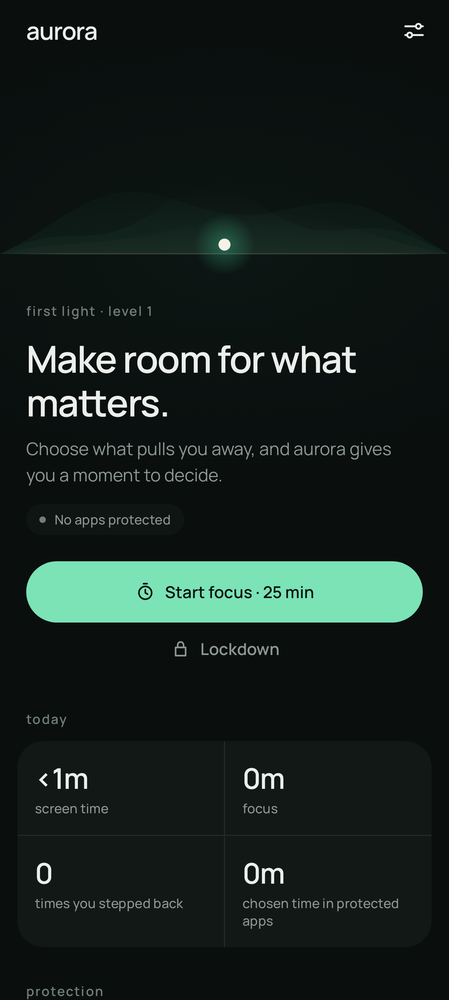
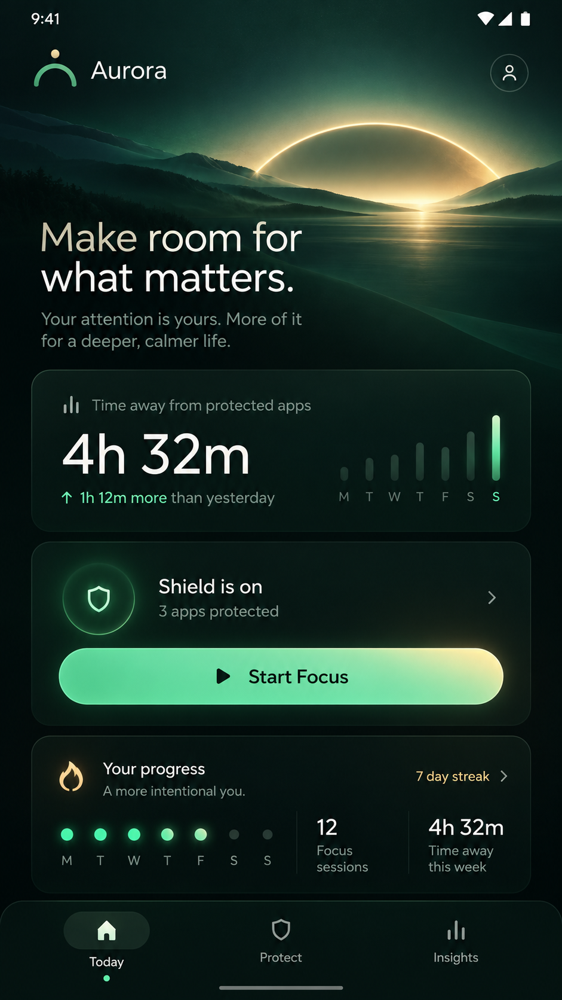
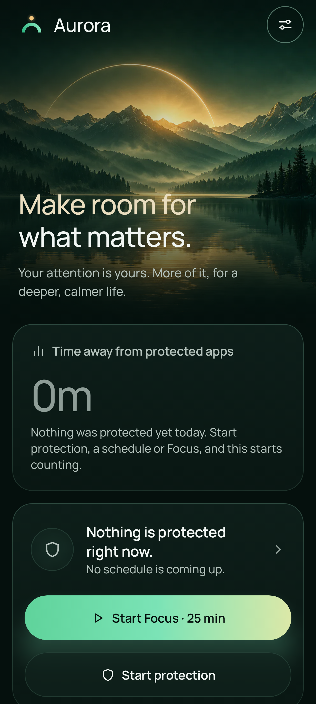
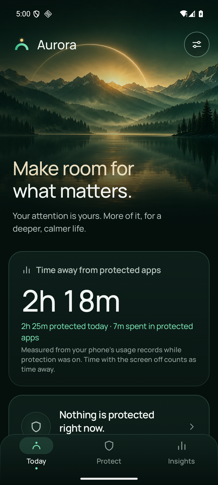
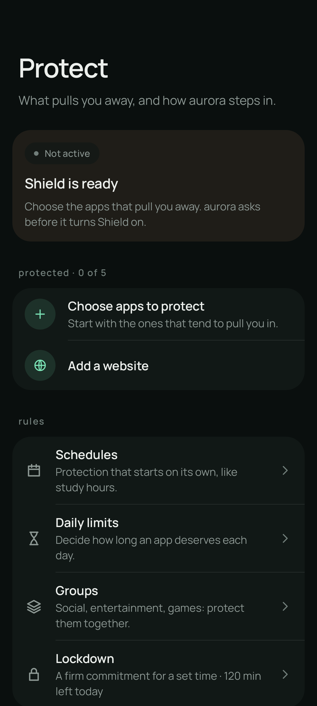
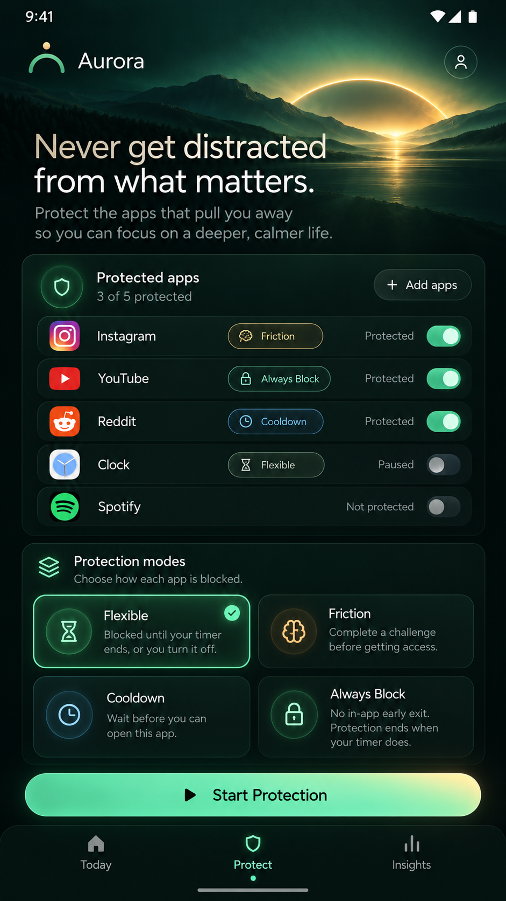
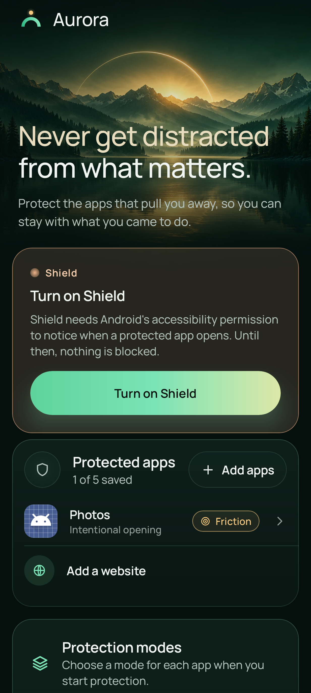
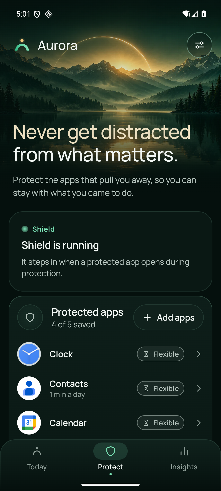
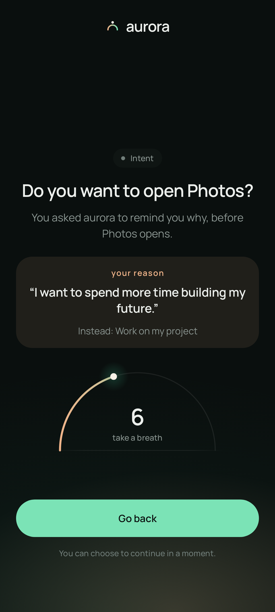
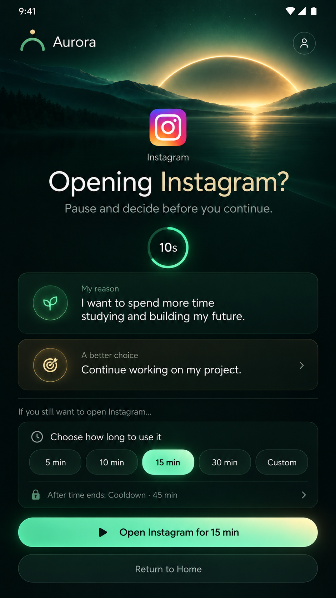
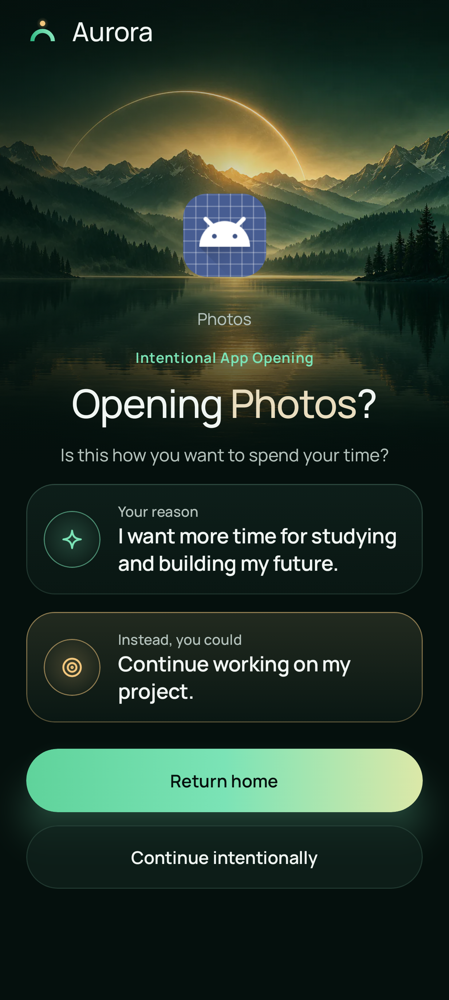
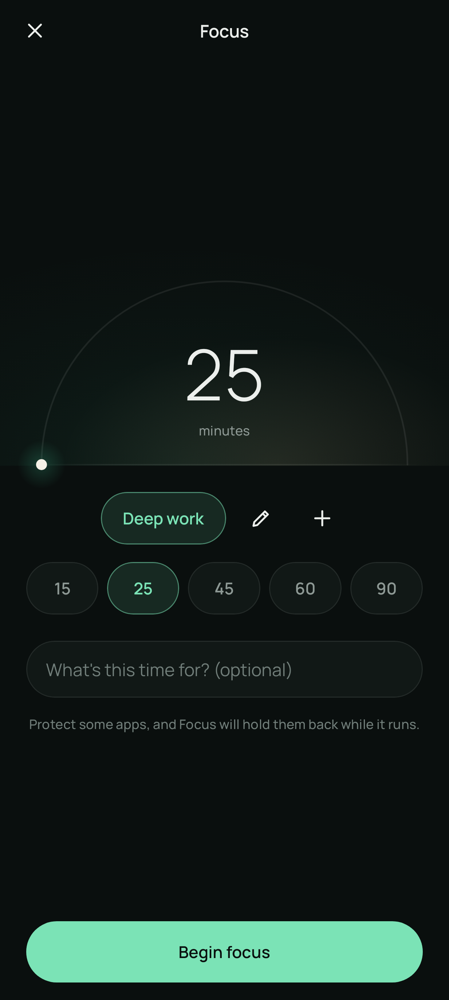
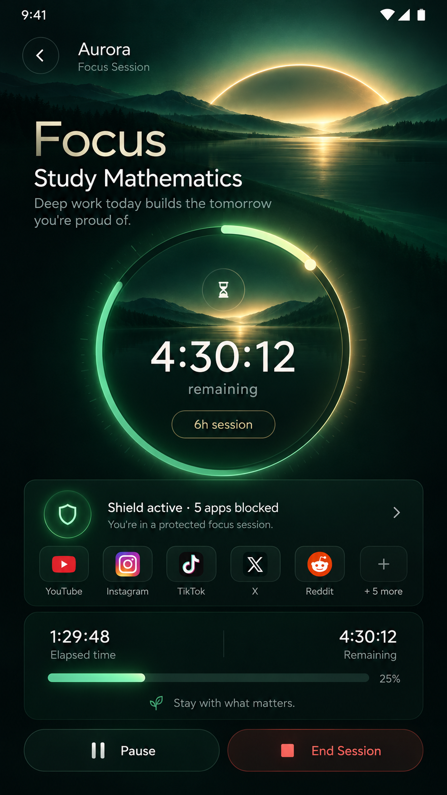
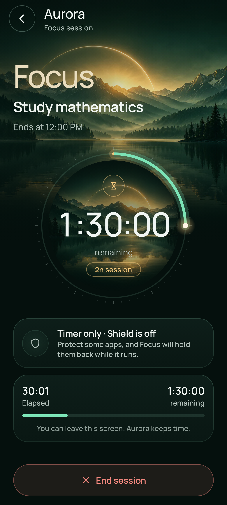
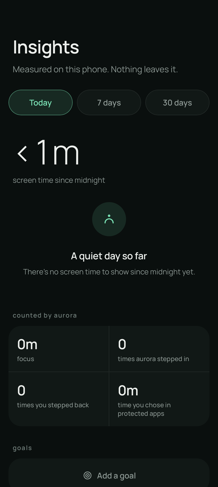
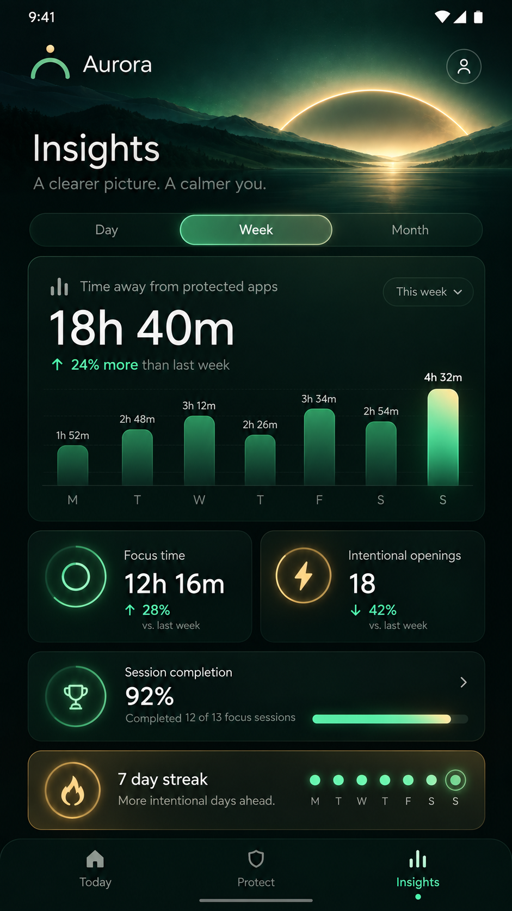
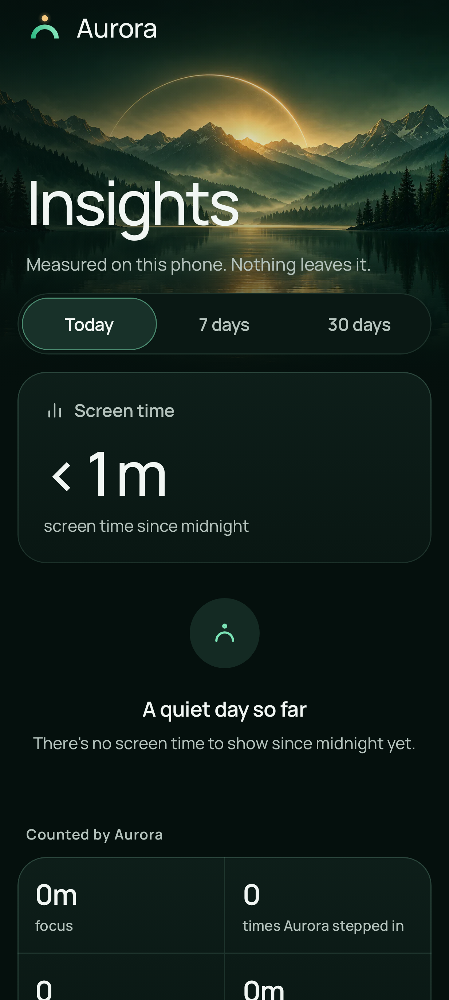
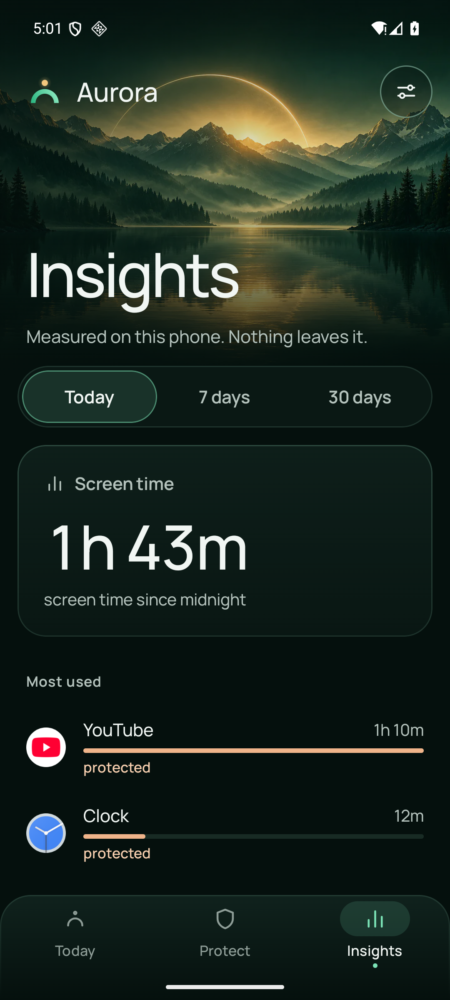